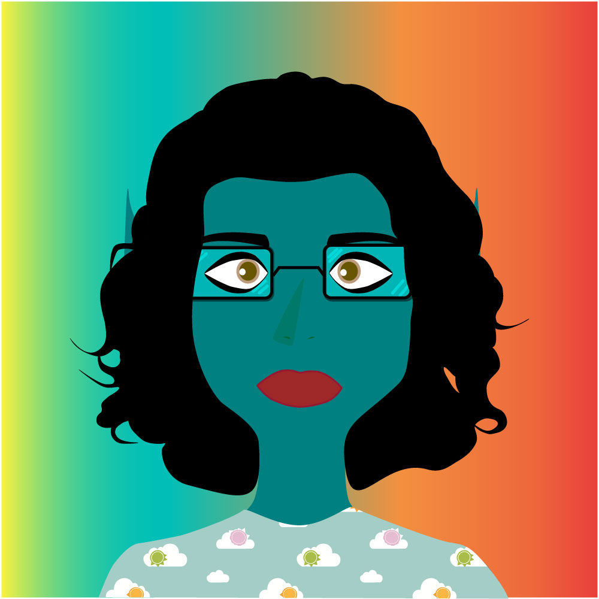

My character's name is Long. He is an Eastern-inspired humanoid dragon. He originates from Long Island, where dragons and humanoid dragons have established themselves, where dragons and humanoid dragons have established themselves. Though they cohabit, humanoid dragons are seen as “inferior” due to their human characteristics and thus treated unfavorably.
In terms of physical traits, he is tall; has a beard, a big nose, and blemished skin; and is sporting a pair of glasses as he is near-sighted. Personality-wise, he is generally well-intentioned but because of how curt he is, it comes off as unfriendly and sometimes hostile. Those who got past the initial stage of being off-put by his curtness are usually surprised at how thoughtful and caring he actually is, but by and large people tend to avoid him, which he doesn't mind. Given his nature, he prefers it as a matter of fact.